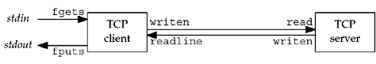

| [ Team LiB ] |
|
5.1 IntroductionWe will now use the elementary functions from the previous chapter to write a complete TCP client/server example. Our simple example is an echo server that performs the following steps:
Figure 5.1 depicts this simple client/server along with the functions used for input and output. Figure 5.1. Simple echo client and server. We show two arrows between the client and server, but this is really one full-duplex TCP connection. The fgets and fputs functions are from the standard I/O library and the writen and readline functions were shown in Section 3.9. While we will develop our own implementation of an echo server, most TCP/IP implementations provide such a server, using both TCP and UDP (Section 2.12). We will also use this server with our own client. A client/server that echoes input lines is a valid, yet simple, example of a network application. All the basic steps required to implement any client/server are illustrated by this example. To expand this example into your own application, all you need to do is change what the server does with the input it receives from its clients. Besides running our client and server in their normal mode (type in a line and watch it echo), we examine lots of boundary conditions for this example: what happens when the client and server are started; what happens when the client terminates normally; what happens to the client if the server process terminates before the client is done; what happens to the client if the server host crashes; and so on. By looking at all these scenarios and understanding what happens at the network level, and how this appears to the sockets API, we will understand more about what goes on at these levels and how to code our applications to handle these scenarios. In all these examples, we have "hard-coded" protocol-specific constants such as addresses and ports. There are two reasons for this. First, we must understand exactly what needs to be stored in the protocol-specific address structures. Second, we have not yet covered the library functions that can make this more portable. These functions will be covered in Chapter 11. We note now that we will make many changes to both the client and server in successive chapters as we learn more about network programming (Figures 1.12 and 1.13). |
| [ Team LiB ] |
|